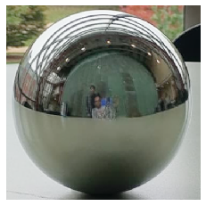
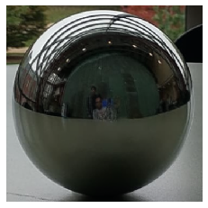
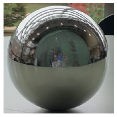
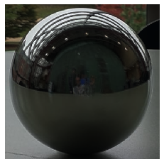
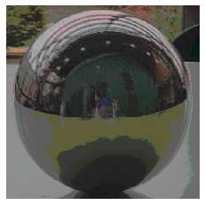
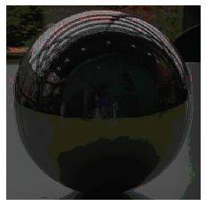
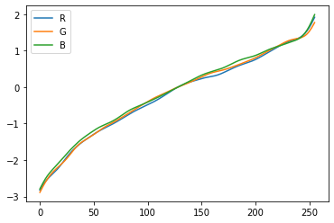

By Andrew Zhang (alz2) and Utkarsh Awasthi (uawasth2)
This is a duplicate page. It is hosted on BOTH Andrew's and Utkarsh's project pages.
Log irradiances for naive LDR Merging
Tone mapped LDR
Linearly scaled LDR
Log irradiances for LDR Merging filtering out over and underexposed pixels
Tone mapped LDR
Linearly scaled LDR
Log irradiances for estimated LDR Merging
Tone mapped LDR
Linearly scaled LDR
The log irradiances of the stages should be different across each stage, but should be more similar between the naive and filtered stage than with the estimated stage.
We know that g(Z) = ln(t) + ln(R), where Z is the pixel intensities, t is the shutter times, and R is the irradiance. For each of the three stages, ln(t) is constant. For the sake of argument, we can ignore ln(t) for explaining how ln(R) is different.
We know ln(R) is different between the estimated stage and both naive and filtered stages because the naive and filtered stages assume that ln(Z) = g(Z) which isn't the case. g(Z) is actually some camera specific mapping of pixel intensities to log exposures. Thus we can reason that the log irradiance of the estimated stage should be different than both the naive and filtered stages.
We know that log irradiances for the naive and filtered stages should be different because even though they both assume that ln(Z) = g(Z), the pixel intensities of both images are different -- that is, the merged Z's are different. However, the filtered Z's are only different in because the filtering process ignores pixels which are over and under exposed, whereas the naive process does no filtering at all. However, given a well taken picture where there are no over and underexposed pixels, the log irradiance should be the same. So because each of the naive and filtered merged Z's are different, we can reason that ln(R) is different between the naive and filtered stages.
TODO
Above: Empty photo, photo with light probe, and resulting render.
Intermediate processes